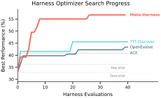

What Makes This Different
There are many methods for optimizing text and code with LLM feedback. The key difference is how much the optimizer gets to see. Most prior methods compress everything into a short summary, a scalar score, or a sliding window of recent candidates. That works for small problems, but harness engineering produces failures that are hard to diagnose without seeing the raw execution trace.
Meta-Harness takes a different approach: it gives the proposer a filesystem containing the full source code, scores, and execution traces of
every prior candidate. The proposer is a coding agent (Claude Code) that reads what it needs via grep, cat, and
other standard tools. In practice, this means up to 10M tokens of diagnostic context per step, vs. at most 26K for all prior methods we
surveyed. The result is that the proposer can trace a failure back to the specific harness decision that caused it, rather than guessing
from a score. See the paper for details.
| Method | History | Log content | Mtok/iter ↑ |
|---|---|---|---|
| Self-Refine | Last | output + self-generated critique | 0.001 |
| OPRO | Window | past (solution, score) pairs | 0.002 |
| TextGrad | Last | LLM textual gradient | 0.015 |
| MIPRO | Summary | bootstrapped program traces | 0.003 |
| AlphaEvolve | Window | program database + eval. scores | 0.022 |
| GEPA | Summary | rollout traces (reasoning + tools) | 0.008 |
| Feedback Descent | Summary | pairwise comparison + feedback | 0.012 |
| TTT-Discover | Window | prev. solution fragment | 0.026 |
| Meta-Harness | Full | all logs and scores | 10.0 |
Context available per optimization step. Mtok/iter = estimated context per evaluation in each paper's largest setting. Hover a row for details.
Results
Text Classification
We follow the online text classification setup of ACE: an LLM receives labeled examples one at a time, updates its memory, and is evaluated on a held-out test set. We search over harnesses using three datasets — LawBench (215 classes), Symptom2Disease (22 classes), and USPTO-50k (180 classes) — with GPT-OSS-120B as the model. We ran 20 evolution iterations with two candidates per iteration, producing 40 candidate harnesses. All test sets are held out until the final evaluation.
| Harness | USPTO ↑ | S2D ↑ | Law ↑ | Acc ↑ | Ctx (K) ↓ |
|---|---|---|---|---|---|
| Zero-shot | 12.0 | 63.2 | 7.0 | 27.4 | 0 |
| Few-shot (N=4) | 11.0 | 68.4 | 18.0 | 32.5 | 4.0 |
| Few-shot (N=8) | 14.0 | 67.9 | 21.0 | 34.3 | 8.0 |
| Few-shot (N=16) | 15.0 | 67.0 | 20.0 | 34.0 | 15.4 |
| Few-shot (N=32) | 13.0 | 72.2 | 21.0 | 35.4 | 31.5 |
| Few-shot (all) | 15.0 | 78.3 | 29.0 | 40.8 | 49.3 |
| ACE | 16.0 | 77.8 | 29.0 | 40.9 | 203.0 |
| MCE | 14.0 | 83.0 | 23.0 | 40.0 | 114.0 |
| Meta-Harness (Ours) | 14.0 | 86.8 | 45.0 | 48.6 | 45.5 |
Test accuracy on three text classification benchmarks (GPT-OSS-120B). Ctx = average additional input context (thousands of characters).
We also directly compare Meta-Harness against two representative program-search methods, OpenEvolve and TTT-Discover (with PUCT selection), giving each the same proposer and evaluation budget. Meta-Harness matches their final accuracy with 10× fewer evaluations, and its final accuracy surpasses theirs by more than 10 points. We attribute this to the filesystem-based interface: both OpenEvolve and PUCT compress history into a fixed prompt format, discarding the execution traces that Meta-Harness uses for targeted diagnosis.

Math Reasoning
We study retrieval-augmented math solving: a language model is given retrieved examples from a large corpus before attempting each problem. Meta-Harness searches over retrieval programs that can implement arbitrary filtering, branching, and formatting logic using corpus metadata and BM25 scores. The corpus contains ≥500K problems drawn from eight open-source datasets. We evolve a single retrieval harness on a 250-problem search set, then evaluate it on 200 held-out IMO-level problems. The same harness is then tested on five models unseen during search, directly measuring transfer.
| Method | GPT-5.4n ↑ | GPT-5.4m ↑ | Gem-3.1FL ↑ | Gem-3F ↑ | GPT-20B ↑ | Avg ↑ |
|---|---|---|---|---|---|---|
| No Retriever | 23.0 | 28.8 | 28.6 | 42.6 | 47.6 | 34.1 |
| Random Few-shot | 23.1 (+0.1) | 24.5 (-4.3) | 31.0 (+2.4) | 40.4 (-2.2) | 41.8 (-5.8) | 32.2 (-1.9) |
| BM25 Retrieval | 30.2 (+7.2) | 29.2 (+0.4) | 32.8 (+4.2) | 46.6 (+4.0) | 48.9 (+1.3) | 37.5 (+3.4) |
| Meta-Harness (Ours) | 31.7 (+8.7) | 30.4 (+1.6) | 34.9 (+6.3) | 46.3 (+3.7) | 50.6 (+3.0) | 38.8 (+4.7) |
Retrieval-augmented math reasoning on 200 IMO-level problems (pass@1, avg. over 3 samples). Absolute improvement over no retriever in parentheses. The discovered Meta-Harness retrieval strategy improves reasoning across all five held-out models, with a 4.7-point average gain.
Agentic Coding (TerminalBench-2)
TerminalBench-2 evaluates LLM agents on 89 Dockerized tasks spanning code translation, distributed ML setup, systems programming, bioinformatics, and cryptanalysis, with binary pass/fail grading and 5 independent trials per task. These tasks are difficult because they require long-horizon, fully autonomous execution under complex dependencies, truncated terminal outputs, and substantial domain knowledge.
Meta-Harness evolves the full coding harness (system prompts, tool definitions, completion-checking logic, and context management). The proposer reads per-task execution traces (command logs, error messages, timeout behavior) to diagnose failure modes and propose targeted fixes. We initialize search from two strong open baselines, Terminus 2 and Terminus-KIRA.
| Claude Opus 4.6 | Pass % |
|---|---|
| Claude Code | 58.0 |
| Terminus 2 | 62.9 |
| Mux | 66.5 |
| Factory Droid | 69.9 |
| TongAgents | 71.9 |
| MAYA-V2 | 72.1 |
| Terminus-KIRA | 74.7 |
| Capy | 75.3 |
| Meta-Harness (Ours) | 76.4 |
| ForgeCode | 81.8 |
| Claude Haiku 4.5 | Pass % |
|---|---|
| OpenHands | 13.9 |
| Claude Code | 27.5 |
| Terminus 2 | 28.3 |
| Mini-SWE-Agent | 29.8 |
| Terminus-KIRA | 33.7 |
| Goose | 35.5 |
| Meta-Harness (Ours) | 37.6 |
Pass rate on TerminalBench-2. Results for others are from the official leaderboard. Meta-Harness ranks #2 among all Opus 4.6 agents and #1 among all Haiku 4.5 agents.
BibTeX
@inproceedings{lee2026metaharness,
title={Meta-Harness: End-to-End Optimization of Model Harnesses},
author={Lee, Yoonho and Nair, Roshen and Zhang, Qizheng and Lee, Kangwook and Khattab, Omar and Finn, Chelsea},
booktitle={Conference on Language Modeling (COLM)},
year={2026}
}